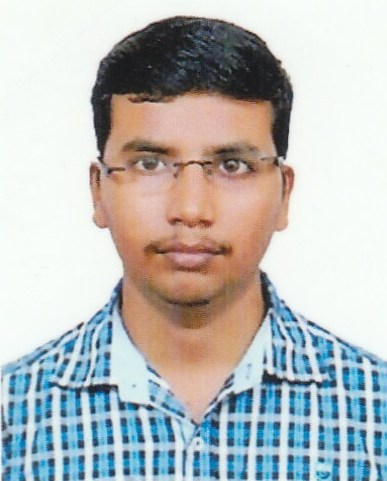

Ramachandran Rajan

7 Cuil Duin Row, Citywest, Dublin D24TD6D ♦ +353 894963182 ♦ ramachandran2194@gmail.com
https://www.linkedin.com/in/ramachandran-rajan-83a719152/
Professional Summary
I'm Ramachandran.I completed my bachelor’s degree in Mechanical Engineering in 2016.
I have seven years of experience in construction design industry.
Now I’m looking for a career transition from mechanical side to tech side.
Skills
- Full Stack Developer
- HTML
- CSS
- Java script
Work History
Suir Engineering, 04/2022 to Current
BIM Detailer– Dublin, IRELAND
- Designing facility systems distribution systems for industrial or semiconductor cleanroom projects.
- Creating and publishing the Federated Model.
- Tool installation using BIM softwares.
- Creating mechanical and electrical services and running clash detection in navisworks manage.
- Coordinate with other services and create a clash-free model.
- Liaise with BIM Manager and Project Manager for model update.
- Creating Bill of Quantities
- Learned new skills and applied them to daily tasks to improve efficiency and productivity.
- Collaborated with team members to achieve target results.
MECHANICAL ENGINEER - BUILDING SERVICES , 06/2021 to 03/2022
JB Everest Technical Services – Pune India
- Attended project planning meetings to coordinate mechanical system designs with structural and architecture
teams, mitigate design conflicts, and coordinate delivery timelines.
- Responsible for assisting in the setup of BIM workflows.
- Supports the Department BIM Manager in leading and managing a BIM team
- Independently determines and develops approach to solutions
- Interaction with design engineers for model update
- Creating BIM models from IFC based on project standards
- Creating pipe & duct systems, sheets, legends
- Coordination with other services & clash study by navisworks.
- Making RFI for the critical situation for designers.
- Extracting BOQ from BIM Models.
- Preparing Shop drawings & Schematic drawings.
- Preparing Detail view & Isometric view for the selected area.
- Submitting model to the client as required.
BIM ENGINEER, 02/2018 to 01/2020
Primosys Technologies – Coimbatore, Tamilnadu
- Create and maintain training materials including new employee REVIT and/or AECOsym onboarding
- Assist in the creation and enforcement of BIM execution plans
- Provide day-to-day support of project software
- Creating BIM models from IFC based on project standards
- Hold regular meetings with REVIT and/or AECOsym leaders group to discuss pertinent issues
- Creating pipe & duct systems, sheets, legends
- Co-ordination with other services & clash study by navisworks
- Making RFI for critical situation to designers
- Extracting BOQ from BIM Models
- Preparing Shop drawings & Schematic drawings
- Preparing Detail view & Isometric view for selected area.
BIM ENGINEER, 06/2016 to 01/2018
3W INNOVATIONS LTD – Coimbatore, Tamilnadu
- Worked in local residential projects.
Education
Bachelor of Science: Mechanical Engineering, 04/2016
Unnamalai Institute of Technology - Kovilpatti
GPA: 7.82
High School Diploma: 03/2012
S.B.K Higher Secondary School - Aruppukottai
GPA: 72
High School Diploma: 04/2010
S.H.N Edward Higher Secondary School - Sattur
GPA: 89